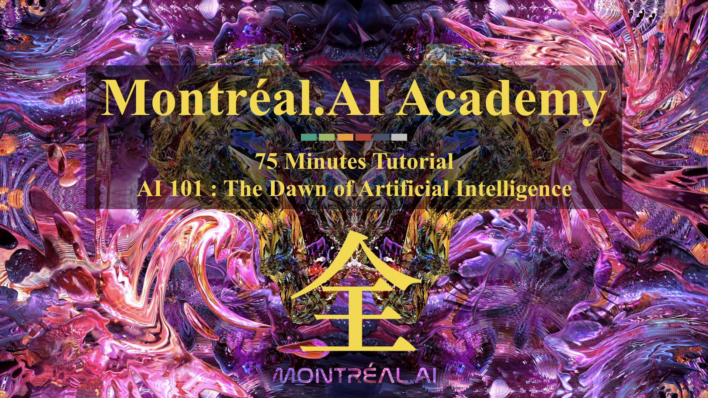

Montréal.AI Academy : AI 101
AI 101 : The Dawn of Artificial Intelligence
Montréal.AI is the largest artificial intelligence community in Canada. Join us and learn at https://www.facebook.com/groups/MontrealAI/ !
The First Comprehensive Overview of All (全) AI for the General Public ＊
AI 101 : A Well-Crafted Actionable 75 Minutes Tutorial
You are qualified for a career in machine learning!
POWERFUL & USEFUL. This actionable tutorial is designed to entrust everybody with the mindset, the skills and the tools to see artificial intelligence from an empowering new vantage point by :
— Exalting state of the art discoveries and science ;
— Curating the best open-source codes & implementations ; and
— Embodying the impetus that drives today’s artificial intelligence.
“In life, you need forcing functions. You never know what you’re capable of until you have no choice but go and do it. Excessive comfort leads to unrealized potential.“ — François Chollet
＊ This 75 minutes tutorial is presently in alpha, with a limited number of customers to help us refine it. As we enter beta, we’ll take on many more groups (minimum 150 persons) from the waiting list.
#AI4Artists : Unveilling a World of Hidden Secrets ＊
Pioneering Legendary Creations : 75 Minutes Tutorial
Designed for artists, #AI4Artists is created to inspire artists who, with AI, will shape the 21st Century.
“The Artists Creating with AI Won’t Follow Trends; THEY WILL SET THEM.“ — Vincent Boucher, B. Sc. Theoretical Physics, M. A. Government Policy Analysis and M. Sc. Aerospace Engineering
See the Pen Montreal.AI’s Bubble Bath by QuebecAI (forked from Tero Parviainen) (@QuebecAI) on CodePen.
＊ This 75 minutes tutorial is presently in alpha, with a limited number of customers to help us refine it. As we enter beta, we’ll take on many more groups (minimum 150 persons) from the waiting list.
Chief AI Officers : C-level AI | Executive Education
Built on over $1 Million ($1,000,000) in artificial intelligence research
Chief AI Officers : C-level AI harnesses the fundamentals of artificial intelligence on a truly global scale and put them to strategically leverage enterprises, governments and institutions with precision engineering.
Success is about actively shaping the game that matters to you. This well-crafted C-level professional keynote pioneers a highly impactful understanding of transformative artificial intelligence strategies, at boardroom level, bringing to life new perspectives for state, national, and international organizations.
Participant Profile
“We want to see more life-long learning opportunities, across the board matrix interoperability and the development of Chief AI Officers who possess the knowledges, the skills and the competencies to orchestrate impactful breakthroughs and tangible economic growth for Fortune 500, governments and interagency partners in full compliance with our masterplan : The Montréal AI-First Conglomerate Overarching Program.“ — Vincent Boucher, B. Sc. Physics, M. A. Policy Analysis and M. Sc. Aerospace Engineering (Space Technology), Founding Chairman at Montréal.AI
Chief AI Officers : C-level AI is designed for the :
- Board Members;
- Captains of Industry;
- Chancellors;
- Chief Executive Officers;
- Commanders;
- Excellences;
- Global Chairs
- High-Potential Executives;
- Iconic Tech Entrepreneurs;
- Luminaries;
- Managing Directors;
- Moguls;
- Philanthropists;
- Presidents;
- Scholars;
- Successful Entrepreneurs and Financiers; and
- Visionary Founders
… who wish to strategically unleash the power of artificial intelligence on a truly global scale.
Keynote Speaker
Keynote Speaker: Vincent Boucher, Founding Chairman at Montréal.AI.
Vincent Boucher’s strategic foresight and ability to drive one of the AI industry’s most ambitious project ever has pushed this experienced and seasoned executive to the forefront of its field, earning a well-deserved reputation.
Program Benefits
This well-crafted professional keynote presentation pioneers a highly actionable understanding of artificial intelligence strategies, at boardroom level (including best practices), bringing to life new perspectives for state, national, and international organizations.
Language
Course given in French
Length
Half a day - 8:30 a.m. to 11:30 a.m.
Fee
Until November 30th, 2018: $ 500 + taxes
From December 1st, 2018 until January 31st, 2019: $ 750 + taxes
From February 1st, 2019 until May 3rd, 2019: $ 1250 + taxes
Date
Friday, May 17th, 2019
Location
Montreal (Québec), Canada. Precise location will be exclusively revealed in May 2019 to official participants.

The First World-Class Overview of AI for the General Public
Curated Open-Source Codes, Implementations and Science
“The best way to predict the future is to invent it.“ — Alan Kay
0. Getting Started
Today’s artificial intelligence is powerful, useful and accessible to all.
Tinker with Neural Networks : Neural Network Playground — TensorFlow
On a Local Machine
Install Anaconda and Launch ‘Anaconda Navigator’
Update Jupyterlab and Launch the Application Under Notebook, Click on ‘Python 3’
- JupyterLab is Ready for Users — Project Jupyter
In the Cloud
- Colab: An easy way to learn and use TensorFlow — TensorFlow
- Access free GPU compute via Colab — TensorFlow
- TensorFlow Blog — TensorFlow
In the Browser
- TensorFlow dev summit Official TensorFlow.js Launch
- Introducing TensorFlow.js: Machine Learning in Javascript — Josh Gordon, Sara Robinson
- TensorFlow.js — TensorFlow
Preliminary Readings
- Deep Learning — Yann LeCun, Yoshua Bengio, Geoffrey Hinton
- The WIRED Guide to artificial intelligence — WIRED
- How to teach yourself hard things — Julia Evans
- Learn X in Y minutes (Where X=python3) — Louie Dinh
- The Matrix Calculus You Need For Deep Learning — Terence Parr, Jeremy Howard
- Introduction to the math of backprop — Deb Panigrahi
- Introduction to Applied Linear Algebra – Vectors, Matrices, and Least Squares — Stephen Boyd and Lieven Vandenberghe, Cambridge University Press
- “A birds-eye view of optimization algorithms” — Fabian Pedregosa
- How to visualize decision trees — Terence Parr, Prince Grover
- Machine Learning for Visualization — Ian Johnson
- Scipy Lecture Notes — Scipy
- Interview with The Youngest Kaggle Grandmaster: Mikel Bober-Irizar (anokas) — Sanyam Bhutani, Hacker Noon
- Competitive Programmer’s Handbook — Antti Laaksonen
- Rules of Machine Learning: Best Practices for ML Engineering — Martin Zinkevich
- A Neural Network in 11 lines of Python — iamtrask
- Machine Learning From Scratch — Erik Linder-Norén
- A Beginner’s Guide to the Mathematics of Neural Networks — A.C.C. Coolen

1. Deep Learning
“DL is essentially a new style of programming–”differentiable programming”–and the field is trying to work out the reusable constructs in this style. We have some: convolution, pooling, LSTM, GAN, VAE, memory units, routing units, etc.“ — Thomas G. Dietterich
1.1 Neural Networks
“Neural networks” are a sad misnomer. They’re neither neural nor even networks. They’re chains of differentiable, parameterized geometric functions, trained with gradient descent (with gradients obtained via the chain rule). A small set of highschool-level ideas put together.“ — François Chollet
- AI Playbook — Andreessen Horowitz
- Clear Explanations of Machine Learning — Distill
- Deep Learning Book — Ian Goodfellow, Yoshua Bengio, Aaron Courville
- Neural Networks and Deep Learning — Michael Nielsen
- Deep Learning — Vincent Vanhoucke | Google
- A Complete Implementation of a Toy Neural Network — Stanford CS class CS231n
- Neural networks: training with backpropagation — Jeremy Jordan
- Introduction to Machine Learning for Coders — Jeremy Howard
- Machine Learning Yearning — Andrew Ng
- Effective TensorFlow for Non-Experts — Google Developers
- A curated collection of inspirational AI-powered JavaScript apps — Elle Haproff, Asim Hussain, Osama Jandali
- Pytorch Implementation of Neural Processes — Chris Ormandy
- A Few Unusual Autoencoders — Colin Raffel
- Pytorch implementation of JointVAE, a framework for disentangling continuous and discrete factors of variation — Schlumberger Software Technology
- A New TensorFlow Hub Web Experience — André Susano Pinto, Clemens Mewald
- Approximate Fisher Information Matrix to Characterise the Training of Deep Neural Networks — Zhibin Liao, Tom Drummond, Ian Reid, Gustavo Carneiro
- Avito Demand Prediction Challenge : Kaggle winner explains how to combine categorical, numerical, image and text features into a single NN that gets you into top 10 without stacking — Little Boat
- fast.ai | Making neural nets uncool again Intro Machine Learning | Practical Deep Learning | Cutting Edge Deep Learning | Computational Linear Algebra — Jeremy Howard, Rachel Thomas | Fast.AI
“I feel like a significant percentage of Deep Learning breakthroughs ask the question “how can I reuse weights in multiple places?”
– Recurrent (LSTM) layers reuse for multiple timesteps
– Convolutional layers reuse in multiple locations.
– Capsules reuse across orientation.“ — Trask
1.2 Recurrent Neural Networks
- Understanding LSTM Networks — Christopher Olah
- Attention and Augmented RNN — Olah & Carter, 2016
- Computer, respond to this email — Post by Greg Corrado
- Reversible Recurrent Neural Networks — Matthew MacKay, Paul Vicol, Jimmy Ba, Roger Grosse
- Massive Exploration of Neural Machine Translation Architectures arXiv | Docs | Code — Denny Britz, Anna Goldie, Minh-Thang Luong, Quoc Le
- A TensorFlow implementation of : “Hybrid computing using a neural network with dynamic external memory” GitHub — Alex Graves, Greg Wayne, Malcolm Reynolds, Tim Harley, Ivo Danihelka, Agnieszka Grabska-Barwińska, Sergio Gómez Colmenarejo, Edward Grefenstette, Tiago Ramalho, John Agapiou, Adrià Puigdomènech Badia, Karl Moritz Hermann, Yori Zwols, Georg Ostrovski, Adam Cain, Helen King, Christopher Summerfield, Phil Blunsom, Koray Kavukcuoglu & Demis Hassabis
1.3 Convolution Neural Network
“I admire the elegance of your method of computation; it must be nice to ride through these fields upon the horse of true mathematics while the like of us have to make our way laboriously on foot.“ — A. Einstein
- CNN Is All You Need — Qiming Chen, Ren Wu
- Feature Visualization — Chris Olah, Alexander Mordvintsev, Ludwig Schubert
- Understanding Neural Networks Through Deep Visualization — Jason Yosinski, Jeff Clune, Anh Nguyen, Thomas Fuchs, and Hod Lipson
- MedicalTorch — Christian S. Perone
- Deep Learning for Generic Object Detection: A Survey — Li Liu, Wanli Ouyang, Xiaogang Wang, Paul Fieguth, Jie Chen, Xinwang Liu, Matti Pietikäinen
- The Building Blocks of Interpretability — Chris Olah, Arvind Satyanarayan, Ian Johnson, Shan Carter, Ludwig Schubert, Katherine Ye, Alexander Mordvintsev
- Detectron : State-of-the-art Object Detection — Ross Girshick and Ilija Radosavovic and Georgia Gkioxari and Piotr Doll\’{a}r and Kaiming He
- YOLOv3: An Incremental Improvement | WebSite | YouTube — Joseph Redmon, Ali Farhadi
- AdVis.js : Exploring Fast Gradient Sign Method — Jason Lin, Dilara Soylu
- Machine Learning for Artists | This is how convolution works — Machine Learning for Artists
- Deep Painterly Harmonization | Notebook — Sylvain Gugger
- How Convolutional Neural Networks Work — Brandon Rohrer
1.4 Capsules
- Dynamic Routing Between Capsules — Sara Sabour, Nicholas Frosst, Geoffrey E Hinton
- Capsule Networks (CapsNets) – Tutorial — Aurélien Géron
- Understanding Hinton’s Capsule Networks. Part I: Intuition. — Max Pechyonkin
- Capsules for Object Segmentation — Rodney LaLonde, Ulas Bagci
- Brain Tumor Type Classification via Capsule Networks — Parnian Afshar, Arash Mohammadi, Konstantinos N. Plataniotis
- A Tensorflow implementation of CapsNet — Huadong Liao
2. Autonomous Agents
“No superintelligent AI is going to bother with a task that is harder than hacking its reward function.“ — The Lebowski theorem
2.1 Evolution Strategies
- A Visual Guide to Evolution Strategies — David Ha
- Evolution Strategies as a Scalable Alternative to Reinforcement Learning — OpenAI
- The Surprising Creativity of Digital Evolution: A Collection of Anecdotes from the Evolutionary Computation and Artificial Life Research Communities — Joel Lehman, Jeff Clune, Dusan Misevic, Christoph Adami, Lee Altenberg, Julie Beaulieu, Peter J. Bentley, Samuel Bernard, Guillaume Beslon, David M. Bryson, Patryk Chrabaszcz, Nick Cheney, Antoine Cully, Stephane Doncieux, Fred C. Dyer, Kai Olav Ellefsen, Robert Feldt, Stephan Fischer, Stephanie Forrest, Antoine Frénoy, Christian Gagné, Leni Le Goff, Laura M. Grabowski, Babak Hodjat, Frank Hutter, Laurent Keller, Carole Knibbe, Peter Krcah, Richard E. Lenski, Hod Lipson, Robert MacCurdy, Carlos Maestre, Risto Miikkulainen, Sara Mitri, David E. Moriarty, Jean-Baptiste Mouret, Anh Nguyen, Charles Ofria, Marc Parizeau, David Parsons, Robert T. Pennock, William F. Punch, Thomas S. Ray, Marc Schoenauer, Eric Shulte, Karl Sims, Kenneth O. Stanley, François Taddei, Danesh Tarapore, et al. (4 additional authors not shown)
- Evolved Policy Gradients — Rein Houthooft, Richard Y. Chen, Phillip Isola, Bradly C. Stadie, Filip Wolski, Jonathan Ho, Pieter Abbeel
- Using Evolutionary AutoML to Discover Neural Network Architectures — Google AI
2.2 Deep Reinforcement Learning
- Reinforcement Learning: An Introduction — Andrew Barto and Richard S. Sutton
- Intuitive RL: Intro to Advantage-Actor-Critic (A2C) — Rudy Gilman
- Simple Beginner’s guide to Reinforcement Learning & its implementation — Faizan Shaikh
- A (Long) Peek into Reinforcement Learning — Lilian Weng
- Monte Carlo Tree Search – beginners guide — Kamil Czarnogórski
- DQN Adventure: from Zero to State of the Art — higgsfield
- SURREAL: Open-Source Reinforcement Learning Framework and Robot Manipulation Benchmark — Linxi Fan, Yuke Zhu, Jiren Zhu, Zihua Liu, Anchit Gupta, Joan Creus-Costa, Silvio Savarese, Li Fei-Fei
- Learning to Act by Predicting the Future — Alexey Dosovitskiy, Vladlen Koltun
- OpenAI Baselines : A2C | ACER | ACKTR | DDPG | DQN | GAIL | HER | PPO2 | TRPO — OpenAI
- Stable Baselines is a set of improved implementations of Reinforcement Learning (RL) algorithms based on OpenAI Baselines Docs | Blog | Code — Antonin Raffin
- TRPO-GAE Blog | arXiv | arXiv — OpenAI
- A3C arXiv | Medium | Code — OpenAI
- Deep Reinforcement Learning — Sergey Levine
- Vel: PyTorch meets baselines — Jerry
- Actor-Critic Policy Optimization in Partially Observable Multiagent Environments — Sriram Srinivasan, Marc Lanctot, Vinicius Zambaldi, Julien Perolat, Karl Tuyls, Remi Munos, Michael Bowling
- TensorFlow Reinforcement Learning — DeepMind
- TensorFlow Agents — TensorFlow
- Curiosity and Procrastination in Reinforcement Learning — Nikolay Savinov, Timothy Lillicrap
- Hierarchical Actor-Critic — Andrew Levy, Robert Platt, Kate Saenko
- Computational Theories of Curiosity-Driven Learning — Pierre-Yves Oudeyer
- Depth-Limited Solving for Imperfect-Information Games — Noam Brown, Tuomas Sandholm, Brandon Amos
- Optimizing Expectations: From Deep Reinforcement Learning to Stochastic Computation Graphs — John Schulman
- Neural Episodic Control — Alexander Pritzel, Benigno Uria, Sriram Srinivasan, Adrià Puigdomènech, Oriol Vinyals, Demis Hassabis, Daan Wierstra, Charles Blundell
- RLlib: Abstractions for Distributed Reinforcement Learning — Eric Liang, Richard Liaw, Philipp Moritz, Robert Nishihara, Roy Fox, Ken Goldberg, Joseph E. Gonzalez, Michael I. Jordan, Ion Stoica
- TreeQN and ATreeC: Differentiable Tree-Structured Models for Deep Reinforcement Learning — Gregory Farquhar, Tim Rocktäschel, Maximilian Igl, Shimon Whiteson
- Q-map: a Convolutional Approach for Goal-Oriented Reinforcement Learning — Fabio Pardo, Vitaly Levdik, Petar Kormushev
- Learning to Search with MCTSnets — Arthur Guez, Théophane Weber, Ioannis Antonoglou, Karen Simonyan, Oriol Vinyals, Daan Wierstra, Rémi Munos, David Silver
- Convergence of Value Aggregation for Imitation Learning — Ching-An Cheng, Byron Boots
- Dopamine : DQN | C51 | Rainbow | Implicit Quantile Network — Marc G. Bellemare, Pablo Samuel Castro, Carles Gelada, Saurabh Kumar, Subhodeep Moitra
- S-RL Toolbox: Reinforcement Learning (RL) and State Representation Learning (SRL) for Robotics — Antonin RAFFIN
- Reinforcement Learning for Improving Agent Design arXiv | Blog — David Ha
- Deep Reinforcement Learning from Human Preferences arXiv | Blog | Code — OpenAI
- Introduction to Learning to Trade with Reinforcement Learning — Denny Britz
- Closing the Sim-to-Real Loop: Adapting Simulation Randomization with Real World Experience — Yevgen Chebotar, Ankur Handa, Viktor Makoviychuk, Miles Macklin, Jan Issac, Nathan Ratliff, Dieter Fox
- Robustness via Retrying: Closed-Loop Robotic Manipulation with Self-Supervised Learning — Frederik Ebert, Sudeep Dasari, Alex X. Lee, Sergey Levine, Chelsea Finn
- CURIOUS: Intrinsically Motivated Multi-Task, Multi-Goal Reinforcement Learning — Cédric Colas, Olivier Sigaud, Pierre-Yves Oudeyer
- One-Shot High-Fidelity Imitation: Training Large-Scale Deep Nets with RL — Tom Le Paine, Sergio Gómez Colmenarejo, Ziyu Wang, Scott Reed, Yusuf Aytar, Tobias Pfaff, Matt W. Hoffman, Gabriel Barth-Maron, Serkan Cabi, David Budden, Nando de Freitas
- Optimizing Agent Behavior over Long Time Scales by Transporting Value — Chia-Chun Hung, Timothy Lillicrap, Josh Abramson, Yan Wu, Mehdi Mirza, Federico Carnevale, Arun Ahuja, Greg Wayne
- Large-Scale Study of Curiosity-Driven Learning — Yuri Burda, Harri Edwards, Deepak Pathak, Amos Storkey, Trevor Darrell, Alexei A. Efros.
- Learning to Communicate with Deep Multi-Agent Reinforcement Learning in PyTorch — Minqi Jiang
- Learning to Navigate the Web — Anonymous
- Understanding & Generalizing AlphaGo Zero — Anonymous
- Deep RL Bootcamp — Pieter Abbeel, Yan (Rocky) Duan, Xi (Peter) Chen, Andrej Karpathy
2.3 Self Play

- Deep Learning: AlphaGo Zero Explained In One Picture — L.V.
- How to build your own AlphaZero AI using Python and Keras — David Foster
- An open-source implementation of the AlphaGoZero algorithm — TensorFlow
“Self-Play is Automated Knowledge Creation.“ — Carlos E. Perez
2.4 Multi-Agent Populations
- Machine Theory of Mind — Rabinowitz et al.
- A Unified Game-Theoretic Approach to Multiagent Reinforcement Learning — Lanctot et al.
- Continuous Adaptation via Meta-Learning in Nonstationary and Competitive Environments — Al-Shedivat et al.
- Autonomous Agents Modelling Other Agents: A Comprehensive Survey and Open Problems — Stefano V. Albrecht, Peter Stone
- Learning with Opponent-Learning Awareness Paper | Blog — OpenAI
- GPU-Accelerated Robotic Simulation for Distributed Reinforcement Learning Paper | Blog — Jacky Liang, Viktor Makoviychuk, Ankur Handa, Nuttapong Chentanez, Miles Macklin, Dieter Fox, NVIDIA
- Multi-Agent Actor-Critic for Mixed Cooperative-Competitive Environments Paper | Blog | Code — OpenAI
2.5 Deep Meta-Learning
- Learning to Learn Paper | Code — Google DeepMind, University of Oxford, Canadian Institute for Advanced Research
- Model-Agnostic Meta-Learning for Fast Adaptation of Deep Networks — Chelsea Finn, Pieter Abbeel, Sergey Levine
- AutoML: Methods, Systems, Challenges — Frank Hutter, Lars Kotthoff, Joaquin Vanschoren
- Talos: Hyperparameter Scanning and Optimization for Keras — Autonomio
- Efficient Neural Architecture Search via Parameter Sharing Paper | Code — Hieu Pham, Melody Y. Guan, Barret Zoph, Quoc V. Le, Jeff Dean
- Meta-Learning Shared Hierarchies Paper | Blog | Code — OpenAI
- Reptile: A Scalable Meta-Learning Algorithm — Alex Nichol, John Schulman
- NIPS2017 Meta Learning Symposium videos — NIPS 2017
2.6 Generative Adversarial Network
- Generative Models — OpenAI
- GAN Lab: Play with Generative Adversarial Networks (GANs) in your browser! — Minsuk Kahng, Nikhil Thorat, Polo Chau, Fernanda Viégas, Martin Wattenberg
- Generative Adversarial Networks (GANs) in 50 lines of code (PyTorch) — Dev Nag
- TensorFlow-GAN (TFGAN) — TensorFlow
- Bayesian GAN arXiv | GitHub — Yunus Saatchi, Andrew Gordon Wilson
- Recycle-GAN: Unsupervised Video Retargeting Paper | Blog — Aayush Bansal, Shugao Ma, Deva Ramanan, Yaser Sheikh
- A collection of GANs TensorFlow | PyTorch
“What I cannot create, I do not understand.“ — Richard Feynman
2.7 World Models
- World Models — David Ha, Jürgen Schmidhuber
- Imagination-Augmented Agents for Deep Reinforcement Learning — Théophane Weber, Sébastien Racanière, David P. Reichert, Lars Buesing, Arthur Guez, Danilo Jimenez Rezende, Adria Puigdomènech Badia, Oriol Vinyals, Nicolas Heess, Yujia Li, Razvan Pascanu, Peter Battaglia, Demis Hassabis, David Silver, Daan Wierstra
3. Environments
3.1 OpenAI Gym
- OpenAI Gym WebSite | Blog | GitHub | White Paper — OpenAI
3.2 Unity ML-Agents
- Unity ML-Agents WebSite | GitHub | Documentation | Challenge I — Unity Technologies
- Puppo, The Corgi: Cuteness Overload with the Unity ML-Agents Toolkit — Vincent-Pierre Berges, Leon Chen
3.3 DeepMind Control Suite
3.4 Brigham Young University | Holodeck
- BYU Holodeck: A high-fidelity simulator for deep reinforcement learning Website | GitHub | Documentation — Brigham Young University
4. General Readings, Ressources and Tools
- Building safe artificial intelligence: specification, robustness, and assurance — Pedro A. Ortega, Vishal Maini, and the DeepMind safety team
- Google Dataset Search Beta — Google
- Papers with Code — Papers with Code
- GitXiv | arXiv + CODE — Collaborative Open Computer Science
- ASILOMAR AI PRINCIPLES — The 2017 Asilomar conference
- Strategic Implications of Openness in AI Development — Nick Bostrom
- teleportHQ ThinkToCode ecosystem — teleportHQ
- Interpretable Machine Learning — Christoph Molnar
- Une intelligence artificielle bien réelle : les termes de l’IA — Office québécois de la langue française
- How to deliver on Machine Learning projects — Emmanuel Ameisen
- The Malicious Use of Artificial Intelligence: Forecasting, Prevention, and Mitigation — Miles Brundage, Shahar Avin, Jack Clark, Helen Toner, Peter Eckersley, Ben Garfinkel, Allan Dafoe, Paul Scharre, Thomas Zeitzoff, Bobby Filar, Hyrum Anderson, Heather Roff, Gregory C. Allen, Jacob Steinhardt, Carrick Flynn, Seán Ó hÉigeartaigh, Simon Beard, Haydn Belfield, Sebastian Farquhar, Clare Lyle, Rebecca Crootof, Owain Evans, Michael Page, Joanna Bryson, Roman Yampolskiy, Dario Amodei
- 26-Year-Old Nigerian Creates First Gaming Robot — Christina Santi
- Is artificial intelligence set to become art’s next medium? — Jonathan Bastable, Christie’s
- Efficiently measuring a quantum device using machine learning — D.T. Lennon, H. Moon, L.C. Camenzind, Liuqi Yu, D.M. Zumbühl, G.A.D. Briggs, M.A. Osborne, E.A. Laird, N. Ares
- Deep Learning : Current Limits and What Lies Beyond Them — François Chollet
- The Superintelligent Will: Motivation and Instrumental Rationality in Advanced Artificial Agents — Nick Bostrom
- MobiLimb: Augmenting Mobile Devices with a Robotic Limb — Marc Teyssier, Gilles Bailly, Catherine Pelachaud, Eric Lecolinet
- 32-Legged Spherical Robot Moves Like an Amoeba — Evan Ackerman, IEEE Spectrum
- On winning all the big academic recent competitions. Presentation. — Megvii (Face++) Team
- Stanford AI recreates chemistry’s periodic table of elements — Ker Than
- Neural Approaches to Conversational AI — Jianfeng Gao, Michel Galley, Lihong Li
- Learned optimizers that outperform SGD on wall-clock and validation loss — Luke Metz, Niru Maheswaranathan, Jeremy Nixon, C. Daniel Freeman, Jascha Sohl-Dickstein
- Beauty and the Beast: Optimal Methods Meet Learning for Drone Racing — Elia Kaufmann, Mathias Gehrig, Philipp Foehn, René Ranftl, Alexey Dosovitskiy, Vladlen Koltun, Davide Scaramuzza
- Autonomous Tidying-up Robot System — Preferred Networks
- Playing Mortal Kombat with TensorFlow.js. Transfer learning and data augmentation — Minko Gechev
- NLP.js : a general natural language utilities for nodejs — AXA Shared Services Spain S.A.
- Constructing exact representations of quantum many-body systems with deep neural networks — Giuseppe Carleo
- Over 200 of the Best Machine Learning, NLP, and Python Tutorials — 2018 Edition — Robbie Allen
- Deep Learning Papers Reading Roadmap — Flood Sung
- ~250 awesome short lectures on robotics — Queensland University of Technology Robot Academy
- The Best Textbooks on Every Subject — lukeprog
“ML paper writing pro-tip: you can download the raw source of any arxiv paper. Click on the “Other formats” link, then click “Download source”. This gets you a .tar.gz with all the .tex files, all the image files for the figures in their original resolution, etc.“ — Ian Goodfellow
✉️ Email Us : info@montreal.ai
📞 Phone : +1.514.829.8269
🌐 Website : http://www.montreal.ai
📝 LinkedIn : https://www.linkedin.com/in/montrealai
🏛 Headquarters : 350, PRINCE-ARTHUR STREET W., SUITE #2105, MONTREAL [QC], CANADA, H2X 3R4 *Administrative Head Office
#AIFirst #MontrealAI #MontrealAIAcademy #MontrealArtificialIntelligence